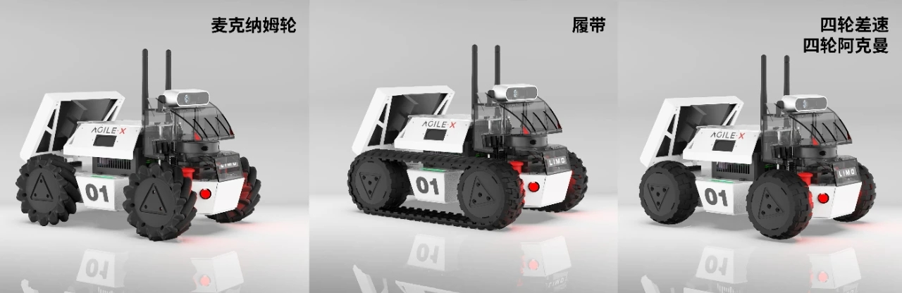

ICT LIMO / 2025 / COURSE
메시지 한 줄에서
LIMO의 자율주행까지
Python·ROS 노드에서 Docker 개발 환경과 LIMO 기체까지. ROS1·ROS2를 병행하며 배운 구조와 차이를 실제 수업 코드로 읽는 교육 기록.
코드를 쓰고, 연결하고,
실제 움직임으로 확인한 수업
두 ROS 버전의 패키지를 나란히 만들고, Docker 안팎의 실행 환경을 구분하고, LIMO의 차체와 센서를 코드로 연결했습니다. 수업일지와 실제 설정 파일을 바탕으로 개발 환경·통신·하드웨어를 자세히 소개합니다.

- 기초 실습
- Python · 노드 · 서비스 · 모델링
- 개발 환경
- Docker · ROS1 / ROS2 비교
- 기체 이해
- LIMO 센서 · 드라이버 · 주행 모드
03.15 · 04.05 / PYTHON & LINUX
로봇 코드를 실행할 수 있는 개발 환경 만들기
Ubuntu 가상환경 · VS Code · Python 함수와 클래스
3월 15일에는 스마트시티에서 자율주행 로봇이 맡을 역할을 살펴본 뒤, VMware의 Ubuntu 22.04 가상환경과 VS Code를 준비했습니다. 폴더를 만들고 이동하고 파일을 생성하는 리눅스 명령어를 직접 사용했습니다. 이후 ROS 패키지의 소스·설정·실행 파일을 다루기 위한 출발점입니다.
Python은 값의 자료형과 출력, 입력, 조건문, 반복문, 함수와 인자를 차례로 다뤘습니다. 4월 5일에는 리스트의 추가·삭제·정렬, 딕셔너리, 클래스와 상속, 클래스 변수와 인스턴스 변수, 모듈과 패키지로 확장했습니다.
ROS 노드는 메시지를 받았을 때 실행할 함수와 반복해서 유지할 상태가 필요합니다. 함수·클래스·자료구조를 먼저 다루면서, 뒤에 등장할 콜백과 노드 객체를 읽고 수정할 기반을 마련했습니다.
- 환경 설치와 파일 다루기
- 입력·조건·반복
- 함수와 자료구조
- 클래스·모듈로 정리
직접 한 실습
터미널 명령, Python 입출력과 제어문, 리스트·딕셔너리 조작, 클래스·상속 예제.
다음 단계의 연결
한 파일의 스크립트를 실행하던 단계에서 패키지와 노드 단위로 프로그램을 구성하는 단계로 넘어갑니다.
04.12–04.26 / NODE & TOPIC
움직임을 메시지로 표현하고 노드끼리 전달하기
ROS1 catkin · ROS2 colcon · Twist · publisher / subscriber
4월 12일에는 ROS1 Noetic 컨테이너를 만들고, VS Code의 Dev Containers와 X11 화면 설정을 다뤘습니다. turtlesim을 실행한 뒤 rospack·rosnode·rosrun·rostopic 명령으로 패키지와 노드, 토픽을 확인했습니다.
hello_ros 패키지를 catkin_make로 빌드하고 Twist 메시지를 보내 turtlesim을 움직였습니다. ROS2에서는 hello_ros2 패키지를 colcon으로 빌드했습니다. 같은 로봇 제어 개념이 서로 다른 빌드·실행 환경에서 어떻게 표현되는지 비교한 실습입니다.
4월 19일에는 simple_pub·simple_sub와 rqt의 토픽 발행 도구를 사용하고, ROS2의 message.launch.py와 ROS1의 message.launch를 작성했습니다. 4월 26일에는 다섯 노드를 연결하는 과제를 진행했습니다. 실제 mt.launch에는 mtpub·mtsub·mpub·msub·msub2가 함께 등록되어 있습니다.
- 발행 노드에서 메시지 생성
- 토픽으로 전달
- 구독 콜백에서 처리
- launch로 여러 노드 실행
확인한 핵심
메시지 타입, 토픽 이름, 발행자·구독자의 관계를 실행 중인 그래프로 읽고 연결합니다.
실습에 남은 코드
ROS1 hello_ros와 ROS2 hello_ros2 패키지, 다섯 노드를 함께 실행하는 mt.launch.
04.26–05.10 / SERVICE & PARAMETER
요청·응답과 설정값을 나누어 다루기
서비스 서버·클라이언트 · 비동기 호출 · YAML
토픽으로 계속 보내는 데이터와, 요청을 보낸 뒤 응답을 받는 동작을 구분했습니다. 4월 26일에는 ROS1 서비스 서버·클라이언트, 스레드와 비동기 호출 예제를 작성했고, 5월 10일에는 ROS2 서비스 서버와 클라이언트를 다뤘습니다.
구체적인 과제는 turtlesim의 펜 색상을 바꾸는 change_color_client.py입니다. 코드는 turtle1/set_pen 서비스를 기다린 뒤 0.3초 주기로 RGB 값을 정하고 call_async로 요청을 보냅니다. 응답 완료 콜백에서 결과를 확인해 요청과 처리를 분리했습니다.
이어 ros2 param의 list·get·set·dump 명령을 사용했습니다. 실행 중인 노드의 설정을 확인하고 바꾼 뒤 YAML로 저장하고 launch에 연결했습니다. 움직임을 결정하는 설정값을 코드 밖에서 다루는 경험은 뒤의 주행·순찰 튜닝으로 이어집니다.
서비스 실습
SetPen 요청을 만들고 비동기로 전송한 뒤 완료 콜백을 받습니다.
파라미터 실습
설정값 조회·변경 → YAML 저장 → launch 적용으로 실행 조건을 다시 사용합니다.
05.24 / ROBOT MODEL
화면에 보이는 로봇과 물리적으로 움직이는 로봇
URDF · link / joint · collision / inertial · Xacro
5월 24일에는 ku_description 패키지에서 myfirst.urdf·origin.urdf·visual.urdf·physics.urdf를 작성하며 모델을 단계적으로 확장했습니다. link는 몸체, joint는 부품 사이의 관계로 다루고, origin을 바꾸었을 때 위치와 방향이 어떻게 달라지는지 확인했습니다.
physics.urdf에는 화면의 형상을 정하는 visual과 충돌 범위를 정하는 collision, 질량·관성을 다루는 inertial이 나뉘어 있습니다. “잘 보이는 모델”과 “시뮬레이터에서 물리적으로 다룰 모델”의 차이를 파일 구조로 살폈습니다.
Xacro의 변수와 매크로를 사용하고, check_urdf와 TF 트리로 연결 관계를 확인했습니다. LIMO 모델과 move_limo 노드를 Gazebo에 연결한 뒤, world 파일과 spawn으로 로봇을 배치하고 표지판 모델을 추가했습니다.
- link와 joint 구성
- 좌표·형상 확인
- 충돌·질량 정보 추가
- Gazebo 월드에 배치
DOCKER / DEVELOPMENT ENVIRONMENT
ROS1 환경을 컨테이너로 분리해 수업하기
Ubuntu · Noetic 컨테이너 · X11 · VS Code Dev Containers
4월 12일과 19일의 수업에서는 ROS1을 위한 Docker 환경을 만들고 VS Code에서 사용했습니다. Ubuntu 22.04 가상환경에서 ROS2 실습을 진행하는 한편, ROS1 Noetic의 도구와 라이브러리는 별도 컨테이너에서 실행하는 구성입니다. 두 버전의 환경을 구분하면서 같은 개념을 비교할 수 있게 했습니다.
준비 순서는 Docker 설치와 서비스 시작, 사용자 그룹 설정, 이미지 다운로드, 컨테이너 생성, VS Code 접속이었습니다. 교안에서 사용한 이미지는 osrf/ros:noetic-desktop-full이고, 기본 실행 예제의 컨테이너 이름은 ros1_noetic입니다. 이미지는 실행 환경의 바탕이고, 컨테이너는 그 이미지로 실행한 작업 공간이라는 차이를 실제 생성 과정에서 다뤘습니다.
turtlesim·rqt 같은 창을 보려면 컨테이너 안의 프로그램을 호스트 화면과 연결해야 했습니다. 수업 자료는 Xorg 세션과 X11 접근 설정, DISPLAY 전달, /tmp/.X11-unix 공유를 사용합니다. --net=host는 컨테이너의 ROS1 노드가 호스트 네트워크를 쓰도록 하는 설정입니다.
| 수업에서 사용한 항목 | 연결한 대상과 역할 |
|---|---|
| osrf/ros:noetic-desktop-full | ROS1 Noetic 도구가 들어 있는 실행 이미지 |
| DISPLAY · /tmp/.X11-unix | 컨테이너의 GUI 프로그램과 호스트 화면 연결 |
| QT_X11_NO_MITSHM=1 | Qt GUI의 X11 공유 메모리 사용 방식 설정 |
| --net=host | 호스트 네트워크를 사용하는 ROS 통신 환경 |
| VS Code의 컨테이너 Attach | 실행 중인 컨테이너 안에서 파일 편집·터미널·빌드 진행 |
VS Code에서는 Docker·Dev Containers 확장을 설치하고 실행 중인 컨테이너에 Attach했습니다. 터미널이 호스트에 열려 있는지 컨테이너 안에 열려 있는지, 어느 ROS 환경을 불러왔는지 구분하는 것이 실습의 중요한 부분이었습니다. GPU가 있는 환경의 NVIDIA 런타임 설정도 교안에 별도로 수록되어 있습니다. 여기에 정리한 옵션은 당시 실습 구성의 설명입니다.
- 이미지 내려받기
- 컨테이너 실행
- 화면·네트워크 연결
- VS Code로 Attach
ROS1 × ROS2 / SAME CONCEPT, DIFFERENT CODE
같은 통신 개념을 두 버전의 코드로 비교하기
catkin / colcon · rospy / rclpy · XML / Python launch
ROS1과 ROS2를 함께 배운 핵심은 명령어를 두 벌 외우는 데 있지 않았습니다. “노드를 만들고, 메시지를 보내고, 여러 프로그램을 함께 실행한다”는 같은 작업을 두 환경에서 직접 구현했습니다. 저장소에는 catkin_ws와 colcon_ws가 나란히 있어 각 단계의 결과를 비교할 수 있습니다.
ROS1의 mpub는 rospy.init_node로 초기화하고 rospy.Publisher·rospy.Timer를 사용합니다. ROS2의 simple_pub는 rclpy.node.Node를 상속한 클래스 안에서 create_publisher·create_timer를 호출하고, main에서 rclpy.init·rclpy.spin을 실행합니다. 두 예제 모두 문자열 메시지를 주기적으로 보내지만 노드의 생성과 관리 방식이 다릅니다.
| 비교한 작업 | ROS1 수업 코드 | ROS2 수업 코드 |
|---|---|---|
| 작업 공간·빌드 | catkin_ws · catkin_make | colcon_ws · colcon build |
| Python 노드 | rospy.init_node · rospy.Publisher | Node 상속 · create_publisher |
| 실행 등록 | hello_ros/scripts의 실행 파일 | setup.py의 console_scripts |
| 여러 노드 실행 | XML message.launch의 node 태그 | message.launch.py의 LaunchDescription·Node |
| 상태와 데이터 확인 | rosnode · rostopic · rosservice | ros2 node · ros2 topic · ros2 service |
| 서비스 호출 | rospy 서비스 서버·클라이언트 | create_client · call_async · 완료 콜백 |
| 설정 재사용 | rosparam·YAML·XML launch | ros2 param·YAML·Python launch |
통신 환경도 구분해야 했습니다. ROS1은 master에 연결할 주소와 각 장치의 주소를 맞추며 노트북과 LIMO를 연결했습니다. ROS2는 기반 미들웨어가 같은 ROS 도메인의 노드를 발견하며, 통신에는 호환되는 QoS 설정이 필요합니다. 이 통신 구조 설명은 ROS2 공식 문서로 보완했으며, QoS 튜닝을 별도 수업으로 완료했다고 확대하지 않았습니다.
이 과정의 “동시 진행”은 두 버전을 병행 학습했다는 뜻입니다. 저장소에서 확인한 예제는 각각의 실행 환경에 속하며, ROS1·ROS2 사이의 메시지 브리지를 구축한 성과로 소개하지 않습니다. ROS1용 코드를 ROS2에서 그대로 실행할 수 있다고 생각하지 않고, 패키지·API·실행 환경을 확인하는 습관을 익혔습니다.
LIMO / HARDWARE & DRIVER
차체·컴퓨터·센서를 ROS 패키지로 연결하기
Jetson Nano · 카메라 · LiDAR · IMU · 직렬 통신
LIMO는 주행 차체 위에 컴퓨터와 센서를 올린 교육용 모바일 로봇입니다. 이 과정의 교육생 자료에는 Jetson Nano, Orbbec DaBai 카메라, EAI X2L LiDAR가 기재되어 있습니다. 기체 소개에서는 이 구성 요소가 ROS 프로그램과 어떻게 연결되는지 함께 살펴보는 것이 중요했습니다.
수업 저장소의 limo_ros는 역할별로 나뉩니다. limo_base는 차체와 통신하는 드라이버, limo_bringup은 시작에 필요한 launch와 설정, limo_description은 기체 형상을 표현하는 URDF를 담습니다. 기체를 켜는 것과 ROS에서 차체·센서를 사용할 준비를 마치는 것은 별개의 단계입니다.
| 구성 | 수업 저장소에서 확인한 연결 |
|---|---|
| 차체 제어 | limo_base가 /cmd_vel의 Twist를 받아 차체 명령으로 변환 |
| 차체 상태 | 드라이버가 /odom과 /imu를 발행해 이동·관성 정보를 전달 |
| 컴퓨터와 차체 | limo_start.launch의 기본 포트는 ttyTHS1; 드라이버에서 직렬 통신 |
| LiDAR | limo_start.launch가 ydlidar_ros의 X2L.launch를 포함 |
| 센서의 위치 | base_link→laser_link, base_link→imu_link의 정적 TF를 설정 |
| 카메라 | 차선 예제가 camera/rgb/image_raw/compressed를 별도로 구독 |
limo_start.launch를 읽으면 차체 노드와 LiDAR, 센서 좌표 변환이 어떻게 함께 시작되는지 보입니다. 반면 카메라 영상은 해당 입력을 발행하는 드라이버가 준비되어야 합니다. 하나의 bringup 실행이 모든 센서를 자동으로 준비한다고 가정하지 않고, 필요한 토픽을 확인하는 방식으로 기체를 이해했습니다.
6월 14일의 실습 기록에는 조종기로 차체를 확인한 뒤 teleop과 SSH로 제어한 순서가 남아 있습니다. 6월 21일에는 노트북에서 ROS1 토픽을 확인하고 이동 노드를 실행했습니다. 무선 연결, ROS 통신, 차체 드라이버, 센서 입력을 차례로 확인하는 과정이었습니다.
- 기체와 네트워크 준비
- 차체·센서 bringup
- 토픽과 좌표계 확인
- 키보드·노드로 제어
LIMO / MOTION MODES
같은 속도 명령도 주행 모드에 따라 다르게 해석하기
차동 구동 · 아커만 조향 · 메카넘 구동
LIMO 실습에서는 주행 모드를 바꾸며 움직임을 확인했습니다. 이를 코드로 읽으면 /cmd_vel의 linear.x·linear.y·angular.z가 항상 같은 방식으로 쓰이지 않는다는 점이 드러납니다. 기구적으로 가능한 움직임과 소프트웨어의 명령 해석을 함께 맞춰야 합니다.
limo_driver.cpp의 twistCmdCallback은 차체의 motion_mode에 따라 명령을 분기합니다. 차동 모드는 전진 속도와 회전 속도를 사용하고, 메카넘 모드는 여기에 횡방향 속도를 추가합니다. 아커만 모드는 전진 속도와 회전 속도로 회전 반경을 계산한 뒤 축간거리·윤거를 이용해 조향각으로 변환하고 각도 범위를 제한합니다.
| 드라이버의 모드 | 사용하는 명령 | 기체를 이해하는 관점 |
|---|---|---|
| MODE_FOUR_DIFF | linear.x · angular.z | 전후 이동과 좌우 회전의 조합 |
| MODE_ACKERMANN | linear.x와 angular.z로 조향각 계산 | 자동차처럼 바퀴를 조향하며 회전하는 구조 |
| MODE_MCNAMU | linear.x · linear.y · angular.z | 전후·횡방향·회전 속도를 함께 사용하는 구조 |
수업일지에는 메카넘·아커만·옴니라는 표현이 등장합니다. 이 글의 세부 비교는 실제 드라이버의 모드 이름과 처리 방식을 기준으로 정리했습니다. 아래 저장소 소개 이미지에는 궤도형 구성도 보이지만, 사진에 있다는 이유만으로 궤도형 실습까지 했다고 단정하지 않았습니다.
bringup에는 use_mcnamu라는 원본 이름의 인자가 있고, 차체 드라이버는 수신한 상태에서도 주행 모드를 읽습니다. 바퀴 구성과 모드 설정, 들어오는 속도 명령이 서로 맞는지 확인하는 것이 LIMO 기체 실습의 핵심입니다.
kuLimo에 포함된 limo_description의 원본 소개 이미지. 왼쪽은 메카넘, 가운데는 궤도, 오른쪽은 차동·아커만용 바퀴 구성입니다. 제품 구성 소개이며 교육 현장 사진은 아닙니다.
07.12–08.09 / INTEGRATION
실습을 팀의 문제로 확장하고 발표로 정리하기
주제 선정 · 구현 · 멘토링 · 반복 시험
7월 12일부터는 팀별로 기능을 정하고 환경을 준비했으며, 7월 19일·26일과 8월 2일의 공동 기록에 구현 상태와 문제 해결 과정을 남겼습니다. 통신 연결, 카메라 입력 문제, 지도 재작성, 장애물 감지 민감도 조정처럼 강의 예제를 실제 환경에 적용할 때 생기는 문제를 다뤘습니다.
운영계획서는 8월 2일 최종 테스트까지를 담고 있습니다. 이후 8월 9일 최종 발표가 1조 발표자료와 업무일지에 확인되어, 교육 기록의 전체 기간을 3월 15일~8월 9일로 표기했습니다.
서빙·추종·반려로봇·스마트 관제의 네 결과는 별도 프로젝트 포스트에서 사진, 시연 화면, 설계 변경과 남은 과제까지 소개합니다.
- 7/12 주제·환경
- 7/19·26 구현·수정
- 8/2 테스트
- 8/9 최종 발표
자료와 기록
수업일지, Docker 설정 교안, hello_ros·hello_ros2와 limo_ros 소스를 대조했습니다. ROS 버전 비교는 당시 코드 중심으로, LIMO 세부 설명은 저장소의 기체 구성·드라이버 기준으로 작성했습니다. ROS2 노드 발견 구조는 공식 문서로 보완했습니다.
기간은 2025년 3월 15일~8월 9일 최종 발표까지입니다. 당시 바인드소프트 소속 최수길의 교육 경험을 정리했으며, 교육생 프로젝트의 시연·성과는 별도 포스트에서 소개합니다.